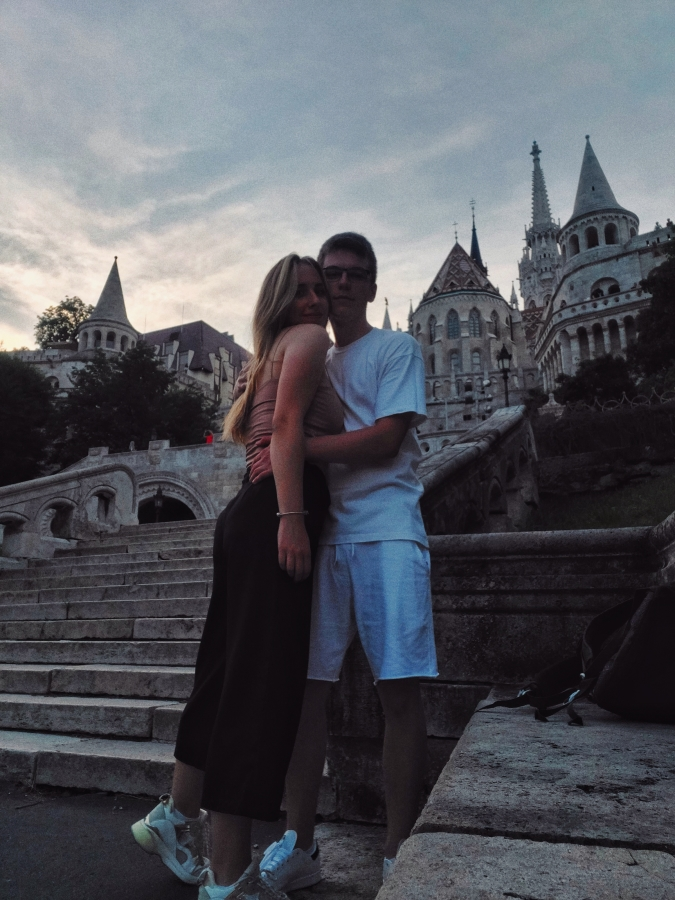
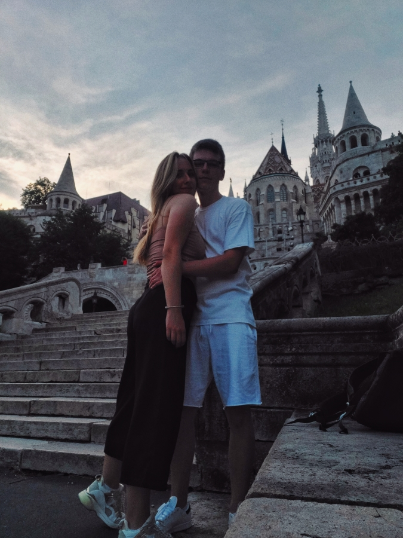

Budimpešta 2021.
U ovoj objavi, pročitaćete iskustva i savete za putovanje u Budimpeštu, jednu od najlepših evropskih prestonica. Na ovom putovanju, saputnik mi je bio dečko (u daljem tekstu Strahinja), a naše putovanje trajalo je 4 dana. Dalje ću pisati o svemu što je bilo pun pogodak, kao i o stvarima koje bismo menjali...
1. Zašto baš Mađarska?
- Zašto smo se mi odlučili da otputujemo baš u Budimpeštu?
- Koje su to stvari koje su nama bile potrebne koje je Mađarska nudila, a ostale destinacije nisu?
- Šta su bili početni planovi i vizije, a kako se završilo?
Pre svega, Budimpešta je, zajedno sa Bečom i Pragom, jedna od prvih i nezaobilaznih destinacija srpskih turista u Evropi. Jedan od glavnih benefita je njena blizina (nalazi se na oko 380km od Beograda i 290km od Novog Sada), a bitan faktor je i novac – turističke atrakcije su uglavnom jeftine, kao i smeštaj, put i hrana.
Glavne i najpoznatije atrakcije zbog kojih turisti biraju Budimpeštu su njen impresivni parlament, prelepi mostovi na Dunavu koji spajaju Budim i Peštu, a nekima su poznati i Budimska tvrđava i trg Heroja. Međutim, lokalci znaju i druge zanimljive atrakcije, pa smo mi za pomoć upitali moju drugaricu (u daljem tekstu Jana) koja nam je otkrila neke skrivene dragulje grada.
Pravi razlog zbog kog smo odlučili da otputujemo u Mađarsku je sklop okolnosti koje su se tako podesile. U današnje vreme, bitan faktor su „korona-mere“, a u Mađarskoj sa slobodom mogu reći da ih uopšte nema (jul 2021.). Za ulaz u državu za državljane Srbije nije potreban nikakav test niti potvrda o vakcinaciji, a maske koje smo uvek sa sobom nosili „za svaki slučaj“ nismo iskoristili nijednom. Zatim, upoređujući sa drugim idejama poput odlaska na more, na Zlatibor ili neki drugi evropski ili srpski grad, ova opcija je bila među najjeftinijim, a svakako pružala najbolji turistički poduhvat za novac koji je bilo potrebno uložiti.
Napomenuću takođe da je celo putovanje (zbog okolnosti) isplanirano u roku od 6 dana, dakle neka „last minute diy“ verzija putovanja, što se ispostavilo u mnogim pogledima kao dobra stvar – nismo imali vremena da danima razmišljamo i planiramo neke stvari za koje tako obično bude a nije potrebno, a i zaboravili smo na neka očekivanja zbog čega nam je sve što smo proživeli prošlo još zanimljivije. Ipak, u nekim sferama smo zbog toga ispaštali, ali zato sada možemo da dajemo savete da drugi ne bi pogrešili.
Dakle, zamisao ovog putovanja bila je četvorodnevna turistička avantura, poseta zanimljivih atrakcija u Budimpešti i njenoj okolini, a pri svemu tome cilj je bio izbeći napotrebni trošak i uložiti u one atrakcije koje zaista vrede.
Glavne i najpoznatije atrakcije zbog kojih turisti biraju Budimpeštu su njen impresivni parlament, prelepi mostovi na Dunavu koji spajaju Budim i Peštu, a nekima su poznati i Budimska tvrđava i trg Heroja. Međutim, lokalci znaju i druge zanimljive atrakcije, pa smo mi za pomoć upitali moju drugaricu (u daljem tekstu Jana) koja nam je otkrila neke skrivene dragulje grada.
Pravi razlog zbog kog smo odlučili da otputujemo u Mađarsku je sklop okolnosti koje su se tako podesile. U današnje vreme, bitan faktor su „korona-mere“, a u Mađarskoj sa slobodom mogu reći da ih uopšte nema (jul 2021.). Za ulaz u državu za državljane Srbije nije potreban nikakav test niti potvrda o vakcinaciji, a maske koje smo uvek sa sobom nosili „za svaki slučaj“ nismo iskoristili nijednom. Zatim, upoređujući sa drugim idejama poput odlaska na more, na Zlatibor ili neki drugi evropski ili srpski grad, ova opcija je bila među najjeftinijim, a svakako pružala najbolji turistički poduhvat za novac koji je bilo potrebno uložiti.
Napomenuću takođe da je celo putovanje (zbog okolnosti) isplanirano u roku od 6 dana, dakle neka „last minute diy“ verzija putovanja, što se ispostavilo u mnogim pogledima kao dobra stvar – nismo imali vremena da danima razmišljamo i planiramo neke stvari za koje tako obično bude a nije potrebno, a i zaboravili smo na neka očekivanja zbog čega nam je sve što smo proživeli prošlo još zanimljivije. Ipak, u nekim sferama smo zbog toga ispaštali, ali zato sada možemo da dajemo savete da drugi ne bi pogrešili.
Dakle, zamisao ovog putovanja bila je četvorodnevna turistička avantura, poseta zanimljivih atrakcija u Budimpešti i njenoj okolini, a pri svemu tome cilj je bio izbeći napotrebni trošak i uložiti u one atrakcije koje zaista vrede.
 
